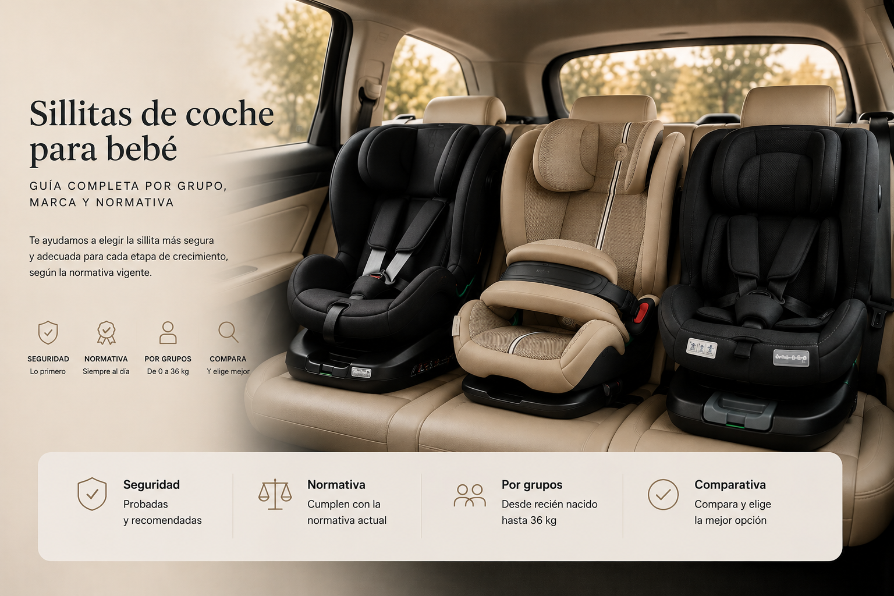

Si es tu primera vez comprando una sillita de coche, hay algo fundamental que debes saber: actualmente encontrarás en el mercado sillas homologadas bajo dos normativas diferentes: la R44/04, basada en grupos según el peso (0/0+/1/2/3), y la R129 (i-Size), basada principalmente en la altura del niño. Por eso, las sillas que encontrarás pueden identificarse por grupo, por categoría i-Size o, en algunos casos, mediante ambas referencias. Esta tabla te dice, en un vistazo, qué grupo te corresponde ahora mismo.
Con esto ya sabes qué buscar. El resto de esta guía te explica cada grupo con más detalle y te lleva a la guía específica si quieres profundizar.
Isofix es el sistema de anclaje que fija la silla directamente a la carrocería del coche, sin usar el cinturón de seguridad — es hoy el estándar más recomendado por seguridad y facilidad de instalación. Las sillas giratorias 360º, además, permiten girar el asiento hacia la puerta para sentar al niño sin forzar la espalda.
Cada marca tiene su propio artículo con los modelos más buscados, ficha técnica y opiniones reales de otras familias.
También puedes consultar otras marcas como Bébé Confort, Babify y Deryan
Si quieres comparar distintas sillitas de coche entre sí, accede a nuestro comparador de sillas y elige las que más te interesen. Podrás consultar sus principales características y compararlas fácilmente para elegir la que mejor se adapte a tus necesidades.
Compara las principales marcas de sillitas de coche y descubre sus diferencias antes de elegir la que mejor se adapte a tu familia.
A partir de cierta edad (normalmente grupo 2-3), muchas familias optan por un alzador en vez de una silla completa. Te explicamos cuándo tiene sentido y qué modelos recomendamos:
Depende del peso o la altura, no solo de la edad — usa la tabla del principio de este artículo como referencia rápida, y consulta la guía de grupos para más detalle.
En España es obligatorio el uso de sistema de retención infantil homologado hasta que el niño mida 135 cm o cumpla 12 años, lo que ocurra primero.
Conviven dos normativas homologadas: R44/04 (por peso) e i-Size (por altura, más reciente y con requisitos de seguridad adicionales). Ver guía específica de normativa para el detalle completo.
Depende del grupo que necesite (0+ para recién nacidos) y de si buscas isofix, giratoria o instalación con cinturón. Consulta la guía de Grupo 0 y recién nacido, y las guías de marca para comparar modelos concretos, o usa el comparador de sillas de coche.
Guía informativa de Lauderem. Los enlaces a productos llevan directamente a la ficha en Amazon.es.